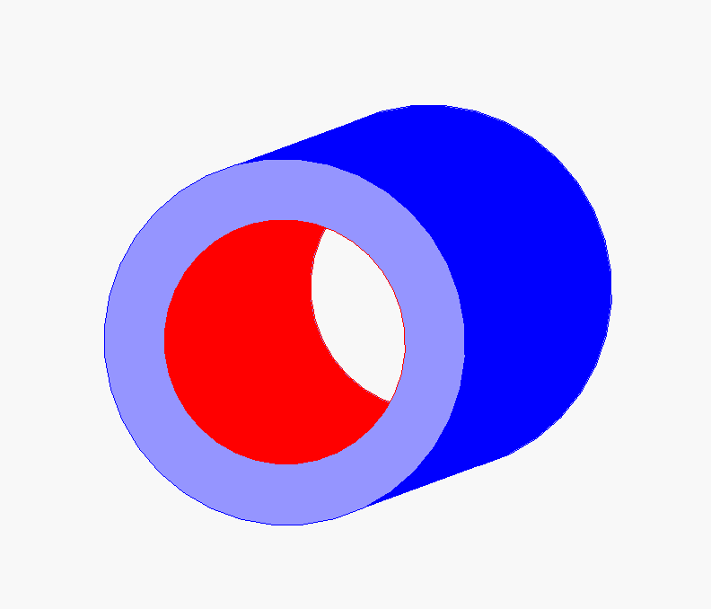

Working as a Structural Engineer I at General Dynamics Electric Boat
Developed during my senior year of college to support my university rocketry club's (AeroBing) ability to simulate complicated SRM geometries. Supports multi-grain BATES and chamfered BATES, finocyl, pseudo-finocyl, star, and pseudo-star grain geometries. Runs entirely self-contained on a custom MATLAB application (i.e. no external toolboxes needed). I developed my own implementation of the Fast Marching Method (FMM) in MATLAB and exported it to C++ for reduced runtime. User-specified input parameters allow customization of all parameterized dimensions for any supported grain geometry. BATES grains are simulated by discretizing a rectangular 2D slice of the motor along the axial dimension since they are radially symmetric about the axial dimension. All other grains are simulated by discretizing a circular 2D slice of the motor normal to the axial dimension because they aren't radially symmetric. For non-BATES motor geometries that vary along the axial dimension, such as pseudo-finocyl or pseudo-star, multiple 2D slices are taken along the varying section.
Once the geometry discretization is complete, the basic logic loop of a SRM simulation is as follows:
There is a substantial amount of pre and post-processing, as well as geometric calculations, but that is the general gist. This loop repeats until the entire grain is burnt. Then the post-processing begins, which calculates key metrics based on the recorded chamber pressure, Kn, exposed surface area, etc. throughout the burn simulation.
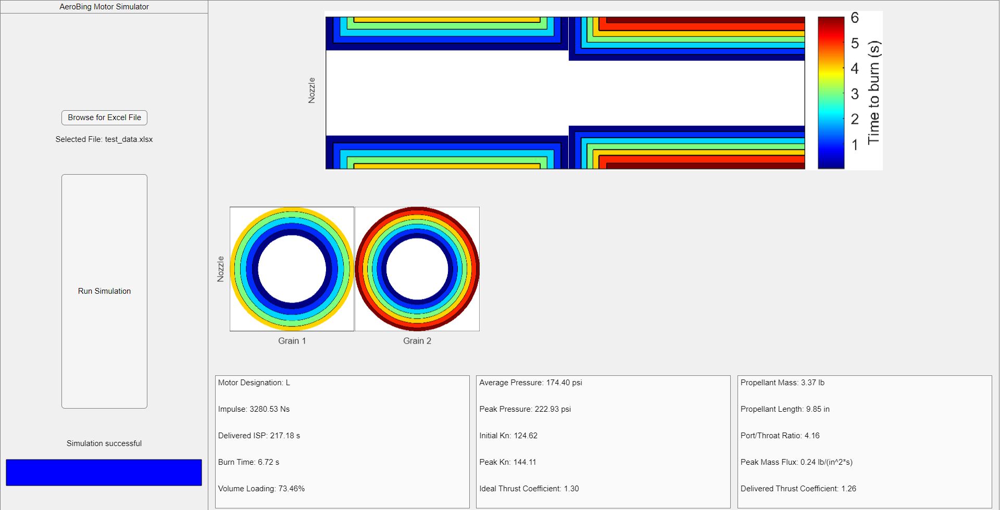
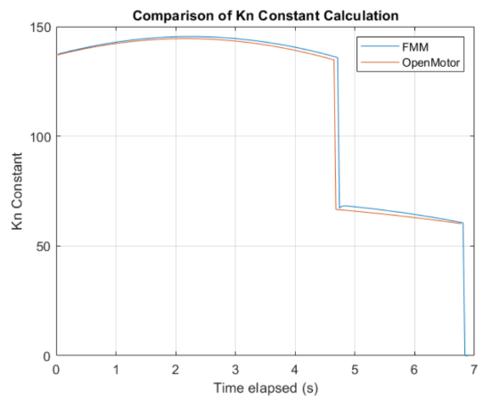
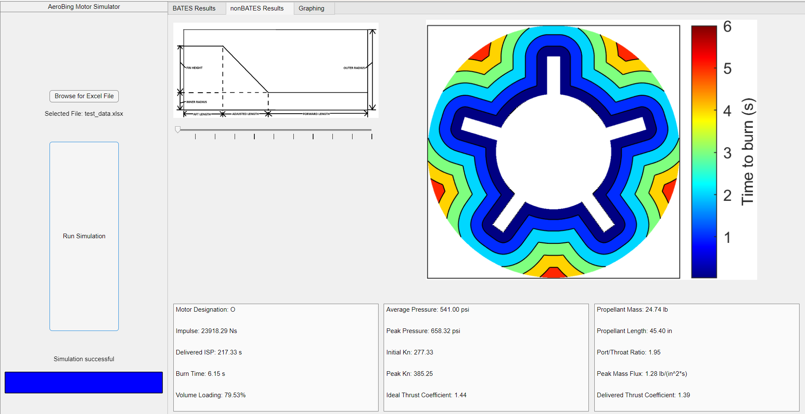
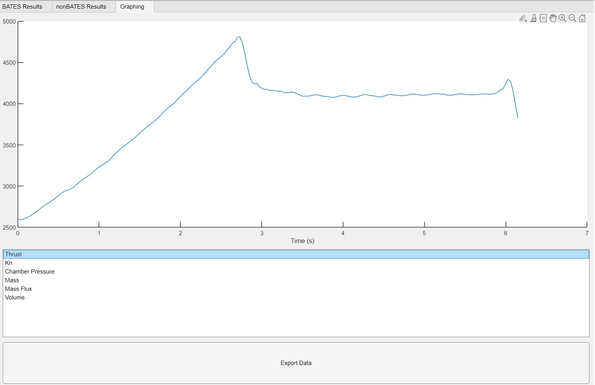
The next iteration of this simulator is written in Python and is still under development. It is intended to be a module of a larger full-stack high-performance amateur rocket design software called "RocketSuite". This iteration is capable of importing a .STEP CAD file and natively selecting faces to define them as either inhibited or burning. It then voxelizes the step, or creates 3D discretization of the entire STEP model, and initially tags voxels as either unburnt or burning based on the aforementioned face selection. This enables a simulation to capture localized burning effects such as erosive burning, as well as represent motors that vary along the axial dimension with a higher fidelity.
The next step for this iteration is fairly straightforward: add a 3D implementation of FMM. Beyond that, however, there are lots of interesting possibilities that 3D simulation enables. For example, the air within the core of the motor may also be voxelized, and a rudimentary CFD simulation could be conducted to accurately capture Mach number and mass flux variations within the core to further refine erosive burning models.

For my senior design project, I led a team of six mechanical engineering seniors to design, manufacture, assemble, test, and complete a 4-axis CNC filament winder over the course of our senior year. The eventual goal was to utilize the winder to produce rocket airframes out of wound composite material such as carbon fiber.
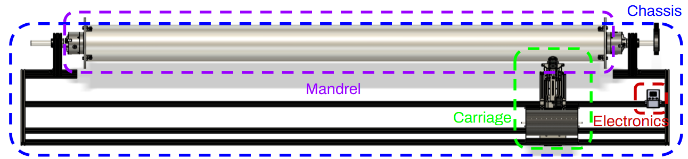
The axes of motion are as follows:
I divided our group into three subteams: chassis, carriage, and electronics. In addition to overseeing the entire project, I worked on the carriage subteam, which is responsible for moving back and forth along the mandrel and depositing filament. It also contains two of the four axes of movement.
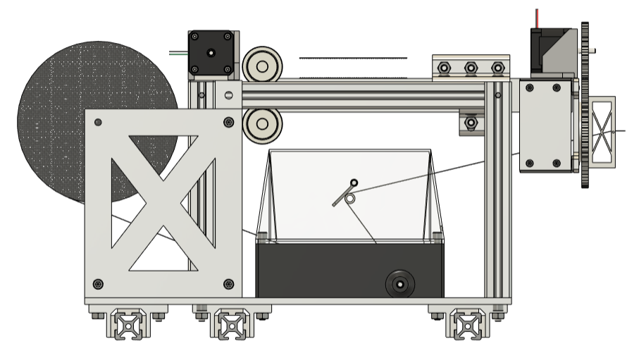
The first axis of movement contained within the carriage is the extension of the deposition arm. This allows the filament to be deposited closer to or further away from the mandrel and is useful for mandrels of varying diameters such as nosecones or nozzles.
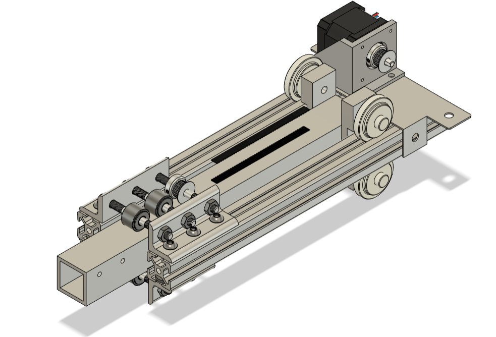
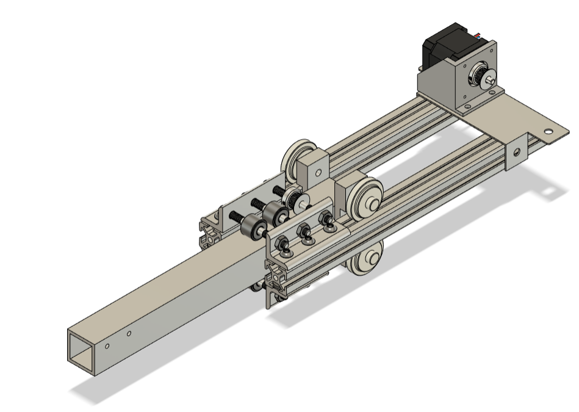
The second axis of movement contained within the carriage is the rotation of the filament deposition spool. This allows the ends of a mandrel to be wound, similar in manner to a pressure vessel, and increases the possible wind patterns AeroBing may use.
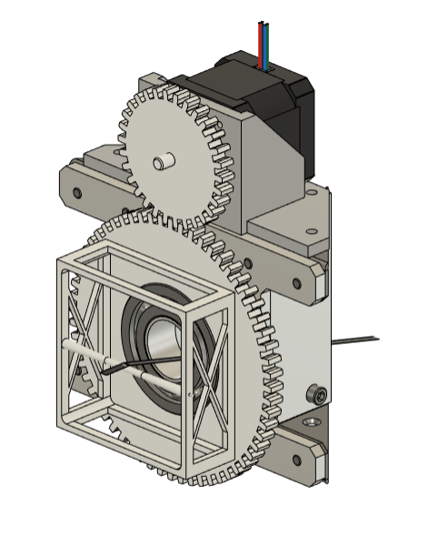
After manufacturing, assembling, and troubleshooting, we conducted a dry-wind demonstration at our senior design presentation event. The project was passed onto AeroBing for further refinement and wet-wind testing.
My junior design project tasked students with developing a concept design. To reduce the amount of drag experienced by the rocket attributed to spin (more significant effects occur in the second half of the launch), I chose to devise a yo-yo despin system. This method involves two weights that are attached to the rocket body. Each weight is also connected to its own cable that is wrapped around the rocket body along a grooved cut before the flight. At a certain point during the rocket flight, after motor burnout, the despin system is activated and two ’detachments’ take place. Weight detachment occurs first, in which the weights are simultaneously released from the rocket body. This weight detachment is the only non-autonomous process in this despin method, meaning once this has occurred the rest of the despin method is carried out to completion automatically. After weight detachment, the cables attached to the weights unwind until the cables are co-linear with a radius of the rocket body. At this exact moment, cable detachment occurs and the cables are also simultaneously released from the rocket.
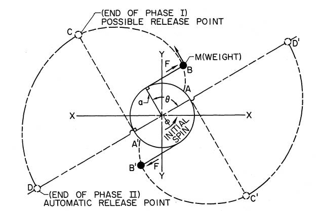
The main design space for this system lies in the optimization of cable length versus the total mass of the weights. The relationship between these two variables was derived and a design curve was created. The optimal combination minimizes the total mass added to the rocket and minimizes the cable length. A shorter cable length is desirable to minimize despin time (reducing entanglement chance from slow execution) and to minimize the maximum rotational deceleration experienced by the rocket. A MATLAB script then determined the optimal cable length and total mass by weighing the two aforementioned criteria equally.
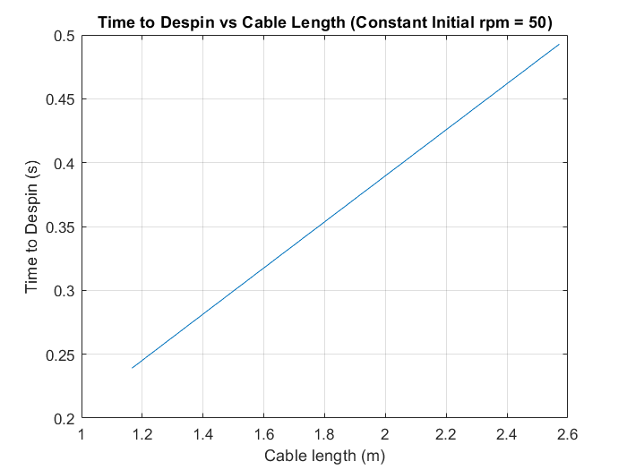
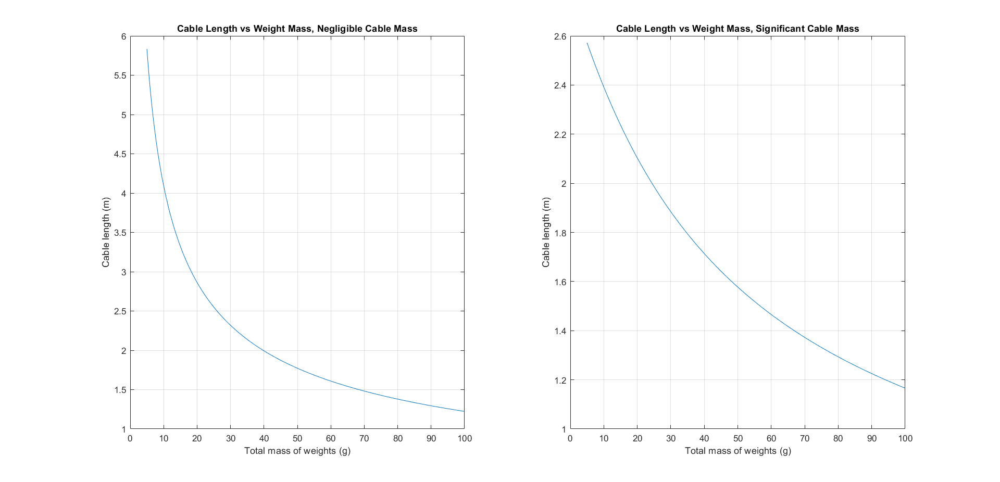
Using the optimal combination of total mass and cable length, a system was devised to simultaneously release both weights using a pneumatic cylinder. The weights would take the form of stainless steel eye-hooks, which would be held in place by the extended arm of the pneumatic cylinder. Upon actuation, the arm would retract, and the eye-hooks would be released and begin unwinding. FEA was performed on the eye-hook during the rocket's maximum rotational velocity prior to yo-yo despin deployment to determine its structural adequacy. CFD was performed on the rocket body using the expected upward velocity at time of deployment to evaluate the aerodynamic impact that the grooves left by the cables have. A better storage solution for the cables is likely necessary for any real-world application of a yo-yo despin system to minimize drag.
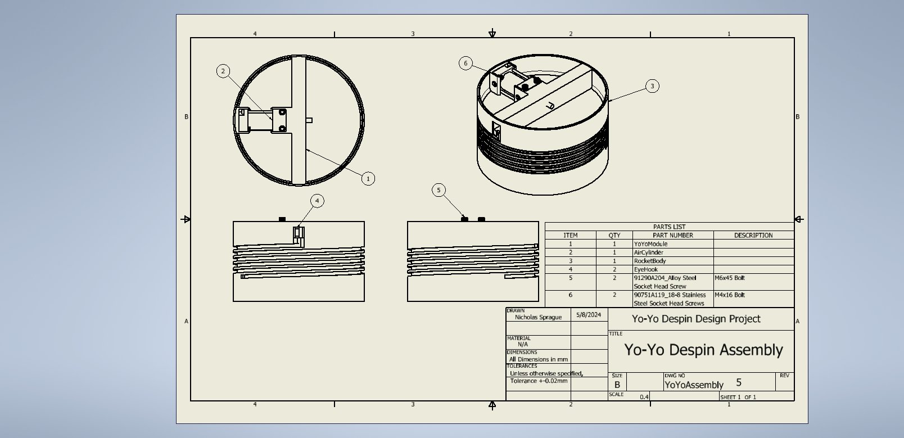
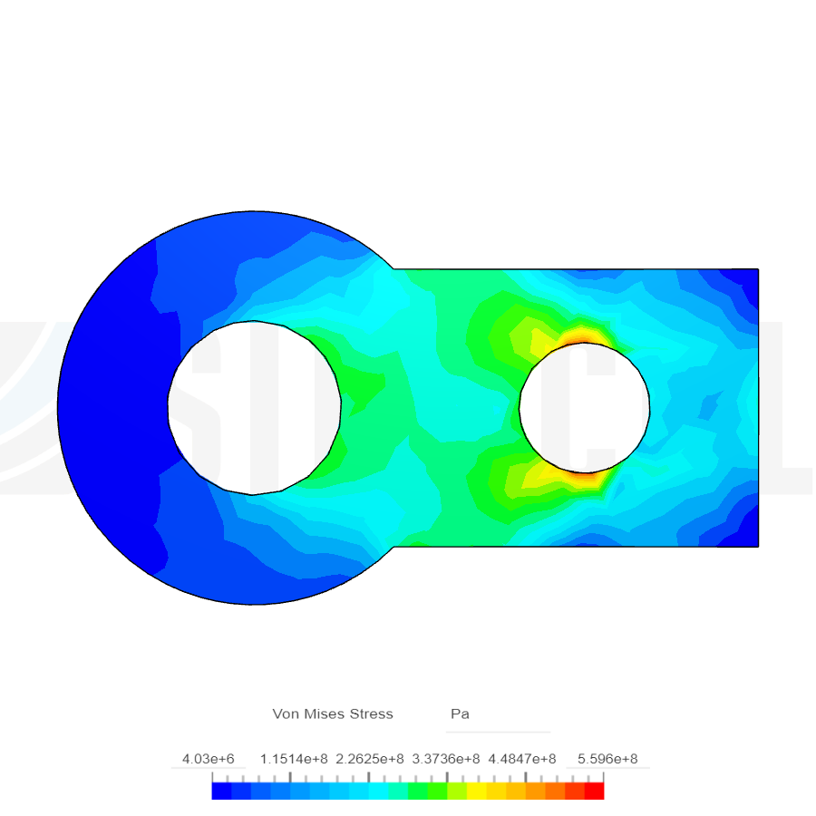
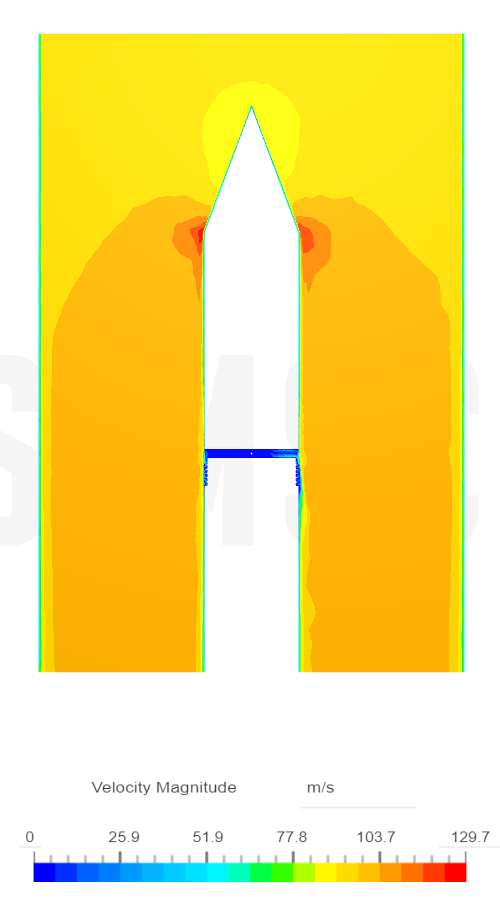